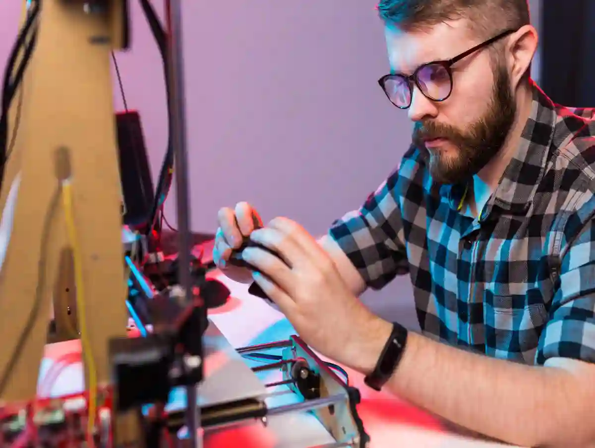
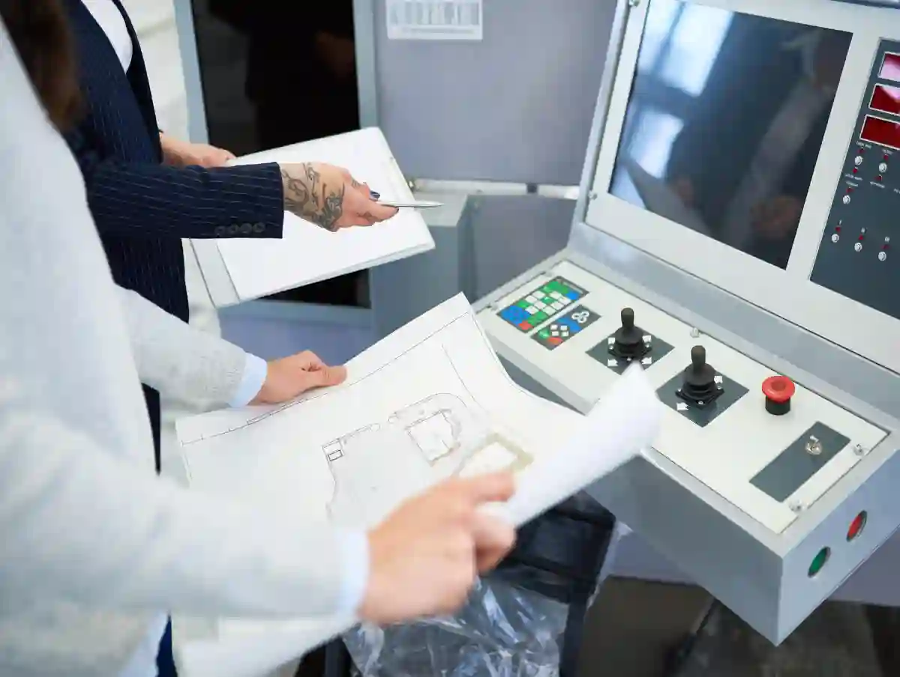
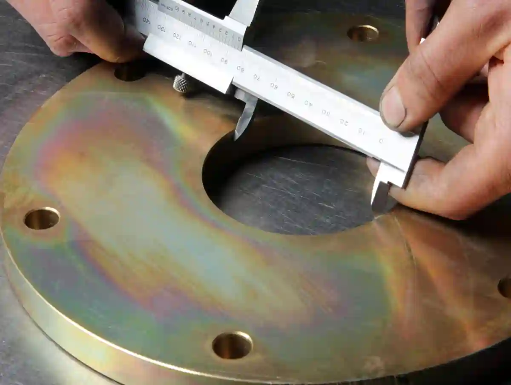

Prototip Doğrulama Süreci: Test, Doğrulama, Revizyon
Prototip üretimi, “üretilmiş bir numune” çıkarmaktan fazlasıdır: karar üretme mekanizmasıdır. Bir prototip; tasarım niyetini, üretilebilirliği, tolerans yönetimini ve fonksiyon beklentisini aynı anda sınar. Bu yüzden prototip doğrulama süreci yalnızca test yapmak değildir; testin hangi soruya cevap verdiğini, verinin hangi kriterle “kabul/ret”e dönüşeceğini ve revizyonların nasıl kontrol edileceğini tanımlayan sistemdir.
Bir prototip projede en pahalı hata; hatanın kendisi değil, hatayı tanımlayamamaktır. “Çalışmadı” demek kolaydır; ama neden çalışmadığını izole edemediğinizde revizyonlar rastgeleleşir, zaman uzar, maliyet artar. İyi kurgulanmış prototip doğrulama süreci, revizyonu “kontrollü öğrenme”ye çevirir: hipotez kurulur, test edilir, ölçülür, raporlanır, karar verilir.
Prototip Doğrulama Süreci Testten Daha Geniştir: Test–Doğrulama – Validasyon Ayrımı
Test, veri üretir. Doğrulama, veriyi gereksinime göre değerlendirir. ürün validasyonu ise daha yukarıdan bakar: ürün/prototip gerçek kullanım senaryosunda hedeflenen işi karşılıyor mu?
- Test: “Bu yükte kaç mm sapma var?”
- Doğrulama: “Sapma kabul kriteri içinde mi?”
- Validasyon: “Bu sapma, kullanım senaryosunda sorun yaratıyor mu?”
Bu ayrım netleştiğinde prototip doğrulama süreci içinde herkes aynı dili konuşur. Özellikle karmaşık montajlarda, bir parçanın tek başına “uygun” olması yetmez; karşı parça, bağlantı elemanı, montaj torku, sıcaklık, titreşim gibi değişkenlerle birlikte uygun olmalıdır.

Fonksiyonel Prototip Testi: “çalıştı” Demek Yetmez
Fonksiyonel prototip testi genellikle iki tuzağa düşer: ya “gösterim” seviyesinde kalır ya da aşırı kapsam yüzünden sonsuza uzar. Doğru yaklaşım; fonksiyonu ölçülebilir parametrelere indirgemek ve test koşullarını standardize etmektir.
Örnek: Bir mekanizmanın çalışması “dönüyor” diye geçiştirilemez. Dönme torku, çevrim sayısı, yağlama koşulu, sıcaklık aralığı ve tolerans sapmaları fonksiyonun parçasıdır. prototip doğrulama süreci içinde fonksiyonel test için şu iki soru net yazılmalıdır:
- “Başarılı” saymak için hangi değer aralığı gerekir?
- Bu değeri hangi yöntemle ve kaç tekrar ile ölçeriz?
Test Amaçlı Parça Üretimi ile Riskleri İzole Ederek Hız Kazanmak
Her prototipi “tam ürün” gibi üretmek pahalıdır. Erken aşamada test amaçlı parça üretimi, kritik bölgeyi izole ederek hem daha hızlı öğrenme sağlar hem revizyon maliyetini düşürür.
- Yataklama yüzeyi mi riskli? Sadece o bölgeyi içeren test numunesi üretin.
- İnce cidar deformasyonu mu bekleniyor? Deformasyona açık kesiti izole edin.
- Sızdırmazlık mı kritik? Sadece kanal geometrisini ve yüzeyi doğrulayın.
Bu yaklaşım, prototip doğrulama sürecinin “risk bazlı” ilerlemesini sağlar: en büyük belirsizliği önce kapatırsınız.
Ölçüm Doğrulama Olmadan Doğrulama Olmaz: Metodun Doğrulanması
Prototipte ölçüm, “son kontrolde birkaç ölçü” değildir; karar üretimidir. Ölçülemeyen özellik doğrulanamaz. Bu nedenle ölçüm yöntemi ve izlenebilirlik kritik hale gelir. Türkiye’de kalibrasyon/metroloji perspektifi için TSE Kalibrasyon Hizmetleri referans sayfasını inceleyebilirsiniz.
Akreditasyonlu laboratuvar/kuruluş araması için TÜRKAK ASİST akredite kuruluş arama sayfasını ziyaret edebilirsiniz.
Aymaksan Bağlamı: Prototipten Üretime “entegre” Bakış
Prototipte en büyük avantaj, üretim altyapısının ölçüm ve proses kontrol ile birlikte düşünülmesidir. AYMAKSAN’ın prototip yaklaşımını hizmet perspektifinde görmek için Prototip Üretim & Ar-Ge Desteği sayfasını inceleyebilirsiniz.
Prototip Doğrulama Süreci İçin 1 Sayfalık Test Planı (Kapsam-Kriter-Veri)
Prototip projelerinde hız, “çok test yapmakla” değil “doğru testleri doğru sırayla yapmakla” gelir. Bu yüzden pratik bir çerçeve gerekir: 1 sayfalık test planı. Bu plan, prototip doğrulama süreci boyunca ekibin ortak sözleşmesi gibi çalışır.

1) Gereksinimi Test Maddesine Çevir
- Kritik ölçüler ve toleranslar (teknik resim)
- Montaj arayüzleri ve tolerans zinciri
- Fonksiyon gereksinimleri (yük, çevrim, hız, sızdırmazlık)
- Çevresel koşullar (ısı, titreşim, korozyon/kimyasal)
Burada ürün validasyonu hedefi tek cümle yazılır: “Bu prototip, şu koşullarda şu performansı sağlayacak.”
2) Kabul Kriterini Sayısallaştır
“Kabul edilir” yerine: “X ölçüsü 0,02 mm içinde; yüzey Ra ≤ Y; Z çevrim sonunda sapma ≤ …” gibi net sınırlar. Bu netlik, prototip revizyon süreci tartışmalarını “yorum”dan çıkarır, “veri”ye bağlar.
3) Ölçüm Metodu + Cihaz + Tekrarlanabilirlik
Aynı değeri farklı yöntemle ölçerseniz farklı sonuç alabilirsiniz. Prototipte bu risk büyüktür. prototip doğrulama süreci içinde her kritik ölçü için:
- metod (CMM, mastar, mikrometre, profilometre vb.)
- cihaz/seri no (varsa)
- tekrar sayısı
- ölçüm fikstürü / referans yüzey
netleşir.
Test Amaçlı Parça Üretimi ile Doğrulama Sırasını Doğru Kurmak
Prototip “tam parça” olarak üretildiğinde hatanın kaynağını bulmak zorlaşır. test amaçlı parça üretimi, değişkenleri azaltır. Doğrulama sırası genelde şöyle daha sağlıklı olur:
- Kritik geometriler (bağlama ve takım erişimi)
- Kritik toleranslar (proses içi ölçüm ile)
- Yüzey/oturma yüzeyi kalitesi
- Fonksiyon testleri
- Montaj ve tolerans zinciri
- prototip onay süreci dokümantasyonu
Bu akış, prototip doğrulama sürecini “tek seferde mükemmel” hedefinden çıkarıp “planlı ilerleme”ye sokar.
Dfm/üretilebilirlik Kontrolü: Revizyonun Yarısını Masada Bitir
DFM, prototipten önce yapılan en ucuz doğrulamadır. Tolerans gereksiz sıkı mı? Ölçülebilir mi? Bağlanabilir mi? Takım erişiyor mu? Bu sorulara “evet” demeden prototip basmak, prototip revizyon sürecini şişirir.
DFM’de pratik bir kural: “Üretim için kritik olan her detay, ölçüm için de kritiktir.” Ölçemediğiniz tolerans, doğrulayamadığınız risktir.
Proses İçi Kontrol: Prototipte “erken uyarı” Mekanizması
Proses içi kontrol; prototipte zaman kazandıran küçük ama etkili rutinlerdir:
- İlk parça ölçümü (kritik ölçü listesiyle)
- Kritik ölçülerde ara kontrol (takım aşınma trendi)
- Bağlama tekrar edilebilirliği kontrolü
- Gerekiyorsa kısa “pilot seri” (3–5 adet) trend analizi
Bu yaklaşım, prototip doğrulama süreci içinde “final kontrolde sürpriz” ihtimalini azaltır. Prototip/özel parça içeriklerinin merkezine dönmek için Özel Parça İmalatı Blog sayfasına göz atın
Ölçüm ve Kalite Kontrol: Prototip Doğrulama Sürecinin Omurgası
Prototipte ölçüm, “parça bittiğinde” yapılacak bir iş değil; üretim sırasında karar üreten bir araçtır. Ölçüm stratejisi yanlış kurulursa ya gereksiz retler oluşur ya da kritik sapmalar gözden kaçar. Bu nedenle prototip doğrulama süreci içinde ölçüm; metod, fikstür, referans yüzey ve raporlama standardıyla birlikte ele alınır.

Kritik ölçü listesi (KÖL) Oluşturun
KÖL, “hepsini ölçelim” yaklaşımını engeller. Kritik ölçüler; fonksiyonu, montajı veya güvenliği etkileyenlerdir. Prototipte KÖL’ü doğru seçmek, doğrulama süresini kısaltır.
Ölçüm Belirsizliği ve Tolerans İlişkisi
Toleransınız 0,02 mm ise ölçüm belirsizliğiniz bu değere çok yakın olamaz. Aksi halde sonuç “yoruma” döner. Bu noktada metroloji yaklaşımı devreye girer; TSE’nin metroloji/kalibrasyon vurgusu bu mantığı destekler.
Ölçüm Raporu Standardı: Prototip Onay Süreci için Tek Kaynak
Prototip onay süreci genellikle ölçüm raporuna bakarak karar verir. Bu rapor; sadece değerleri değil, bağlamı da taşır. Sağlam bir rapor standardı:
- Ölçülen özellik / nominal / tolerans
- Ölçüm yöntemi ve referans
- Sonuç (tek ölçüm değil, gerekiyorsa seri)
- Uygun/uygunsuz kararı
- Sapma varsa muhtemel kök neden hipotezi
- Bir sonraki aksiyon (revizyon, tekrar test, tekrar ölçüm)
Bu format, prototip doğrulama süreci boyunca “aynı sorunu tekrar yaşama” riskini düşürür.
Test Kapsamını Netleştirme ve Risk Önceliklendirme
Prototip projelerinde en büyük zaman kaybı, testlerin “çok” olmasından değil; testlerin yanlış sırada ve belirsiz hedefle yapılmasından kaynaklanır. Bu yüzden ölçüm raporu standardı oturduktan sonra bir sonraki adım, test kapsamını az ama etkili hale getirmektir. Buradaki amaç, sahada arızaya veya montaj sorununa dönüşme ihtimali yüksek noktaları erkenden kapatmaktır. Böyle ilerlediğinizde hem süre kısalır hem de revizyon tartışmaları “yorum” yerine “kanıt” üzerinden yürür.
Kritik Özellik Listesi (CTQ) ile Kapsamı Daraltma
CTQ (Critical to Quality) listesi; parçanın fonksiyonunu, montaj uyumunu veya güvenliğini doğrudan etkileyen özelliklerin kısa ve net dökümüdür. Örneğin yataklama çapı, konum toleransı, oturma yüzeyi, diş formu, sızdırmazlık kanalı ya da yüzey pürüzlülüğü kritik olabilir. CTQ oluştururken pratik bir kural iş görür: “Bu özellik saparsa, ürünün işlevi bozulur mu veya montajda zorlanma olur mu?” Cevap “evet” ise CTQ’ya girer. Böylece testler; tüm ölçüleri taramak yerine, gerçekten karar verdirecek ölçülere odaklanır.
Risk Matrisiyle Test Sırasını Belirleme
CTQ belirlendikten sonra, hangi testin önce yapılacağı risk matrisiyle seçilir. En basit haliyle iki eksen yeterlidir: olasılık (sapma ihtimali) ve etki (sapmanın sonuç maliyeti). Etkisi yüksek ve olasılığı yüksek noktalar ilk sıraya gelir. Bu sıraya göre testler kurgulanınca, “parça güzel görünüyor ama kritik yerde kaçırmışız” sürprizleri azalır. Ek olarak, maliyeti yüksek testleri (dayanım/çevrim) en sona bırakmak yerine, önce düşük maliyetli ölçüm ve montaj doğrulamalarıyla riskleri küçültmek gerekir.
Deney Düzeni ve Test Standardizasyonu
Tek bir parçada bile test sonuçlarını oynatan çok değişken vardır: bağlama yönü, fikstür rijitliği, takım aşınması, ölçüm referansı, ortam sıcaklığı, yağlama miktarı… Bu yüzden testleri “standardize etmeden” yapılan yorumlar çoğu zaman yanıltır. Standardizasyonun amacı, farklı denemelerde sadece “tasarladığınız değişkenin” etkisini görmektir; geriye kalan her şeyi kontrol altına almaktır.
Fikstür/Bağlama Standardı ve Tekrarlanabilirlik
Prototipte tekrarlanabilirlik, çoğu zaman fikstür kalitesiyle belirlenir. Parça her seferinde farklı bastırılıyorsa, ölçü sapması “parçadan” değil “bağlamadan” gelir. Bu nedenle bağlama yüzeyleri, referans alınan datum’lar ve sıkma torku standart hale getirilmelidir. İyi bir uygulama: ilk parça üzerinde datum yüzeyleri işaretleyip aynı referansla ölçmek; fikstürün rijitliğini, özellikle ince cidarlı bölgelerde arttırmaktır. Ayrıca fikstür değiştiğinde rapora not düşmek gerekir; çünkü farklı fikstür, farklı sonuç demektir.
Çevresel Koşulların Kontrolü (ısı–titreşim–yağlama)
Bazı prototiplerde “oda sıcaklığı” bile sonuçları değiştirir. Özellikle hassas toleranslarda, ölçümün yapıldığı ortam ve parçanın termal dengesi önemlidir. Aynı şekilde titreşim, yüksek devir operasyonlarında yüzey kalitesini etkileyebilir. Yağlama/soğutma değişimi ise hem takım ömrünü hem yüzey pürüzlülüğünü farklılaştırır. Bu nedenle test öncesi kısa bir “koşul kontrol listesi” uygulanması önerilir: ortam sıcaklığı aralığı, yağlama türü/miktarı, parça bekleme süresi, ölçüm öncesi temizlik prosedürü. Bu küçük disiplin, gereksiz revizyonları ciddi biçimde azaltır.
Veri Paketi ve Karar Kapıları
İyi rapor; tek başına ölçüm değerlerini değil, o değerleri üreten bağlamı da taşır. Bu yüzden ölçüm raporunun hemen ardına “veri paketi” yaklaşımı eklenmelidir. Veri paketi, farklı ekiplerin (tasarım, üretim, kalite) aynı dosya üzerinden karar vermesini sağlar.
İzlenebilir Veri Paketi: Malzeme + Proses + Ölçüm
Minimum veri paketi üç katmandan oluşur: (1) malzeme bilgisi (sertifika/lot, varsa ısıl işlem), (2) proses bilgisi (operasyon sırası, takım/parametre, bağlama notları), (3) ölçüm bilgisi (metod, cihaz, sonuç, tarih). Bu yapı sayesinde “neden sapma oldu?” sorusu tek mail zincirinde kaybolmaz; doğrudan veriye bağlanır. Özellikle aynı parçayı farklı zamanda ürettiğinizde, lot veya takım değişimi etkisini hızlıca görürsünüz.
Karar Kapıları: “devam / düzelt / durdur” Mantığı
Prototip projelerinde zaman kazandıran en pratik yöntem, karar kapıları oluşturmaktır. Örneğin:
- Kapı-1: Kritik ölçüler uygun mu? Değilse durdur ve düzelt.
- Kapı-2: Montaj doğrulandı mı? Değilse düzelt.
- Kapı-3: Fonksiyon testi kabul kriterinde mi? Değilse düzelt.
Bu kapılar, ekibin “tamam mı devam mı?” tartışmasını kısaltır. Ayrıca her kapının çıktısı net olduğu için, sonraki testlere gereksiz para harcanmaz.
Revizyon Öncesi Deney Planı
Revizyon yönetiminde en sık hata, aynı anda birden fazla şeyi değiştirmektir. Böyle yapıldığında hangi değişikliğin işe yaradığını bilemezsiniz. Bu da revizyon sayısını artırır.
Tek Değişken Kuralı ile Revizyon Süresini Kısaltma
Tek değişken kuralı şudur: Bir revizyonda mümkünse yalnızca bir kritik parametreyi değiştirin (örneğin sadece bağlama yönü veya sadece bir tolerans). Sonra testi tekrar edin ve sonucu net görün. Eğer aynı anda toleransı değiştirip takım yolunu değiştirip malzeme lotunu da değiştirirseniz, iyileşmenin kaynağı belirsiz kalır. Bu belirsizlik, proje takvimini uzatan görünmez maliyettir.
Değişiklik Kaydı (ECR/ECO) ile Disiplin Kazanma
Revizyonların “anlık karar” yerine kayıt altına alınması; ekip içi iletişimi hızlandırır. ECR (Engineering Change Request) talebi, ECO (Engineering Change Order) ise uygulanmış değişiklik kaydı olarak düşünülebilir. Her kayıtta şu kısa bilgiler yeterlidir: değişen özellik, hedeflenen etki, etkilediği test/ölçüm, sorumlu kişi, tarih. Bu disiplin oturduğunda, ileride benzer projelerde “hangi revizyon işe yaradı?” sorusuna dakikalar içinde yanıt verirsiniz.
Fonksiyonel Prototip Testi ile Ölçümü Bağlamak (en sık kaçan nokta)
Ölçü uygun ama fonksiyon sorunluysa; sorun çoğu zaman tolerans zinciri, yüzey durumu veya montaj koşuludur. Fonksiyon iyi ama ölçü sapıyorsa; seri üretimde risk büyüktür. Bu nedenle fonksiyon testlerinin çıktısı, ölçümle birlikte yorumlanmalıdır.
Pratik bir bağ:
- Fonksiyon sapması → kritik yüzeyler + karşı parça analizi → ölçüm metodunun kontrolü
- Ölçü sapması → proses parametreleri + bağlama → fonksiyon testinin kritik bölümlerini tekrar
Bu yaklaşım prototip doğrulama sürecini “iki ayrı dünya” olmaktan çıkarır.
Ürün Validasyonu: Laboratuvardan Sahaya Yaklaşmak
Ürün validasyonu, prototipin yalnızca teknik resme değil; kullanım senaryosuna da uyduğunu gösterir. Çoğu projede validasyonun fark yarattığı yer şudur: “kullanıcı hatası”, “bakım senaryosu”, “montaj toleransı” gibi gerçek hayat değişkenleri.
TÜBİTAK’ın Teknoloji Hazırlık Seviyeleri (THS) dokümanında prototipin entegre edilip test ile doğrulanmasına dair tanımlar, validasyon mantığını konumlandırır.
Metroloji/kalibrasyon temeli için: Prototipte “ölçemediğini doğrulayamazsın” yaklaşımını TSE Kalibrasyon Hizmetleri çerçevesi netleştirir. Akreditasyonlu kuruluş aramak için: ölçüm/deney altyapısı seçerken TÜRKAK ASİST akredite kuruluş arama ekranı pratik bir başlangıç sağlar. Ölçüm ve raporlama tarafını derinleştirmek için Prototip Üretiminde Kalite Kontrol ve Ölçüm Süreçleri</span> sayfasını inceleyebilirsiniz.
Prototip Revizyon Süreci: Deneme-Yanılmayı “kontrollü öğrenme”ye Çevirme
Revizyon, prototipin doğal parçasıdır. Sorun revizyon yapmak değil, revizyonu yönetememektir. prototip revizyon süreci doğru kurgulanırsa her revizyon; hipotez > test > ölçüm > karar zinciriyle ilerler. Aksi halde revizyon; “acil düzeltme” kültürüne dönüşür.
Revizyonu Sınıflandırın (geometri–proses–malzeme)
- Geometri revizyonu: tolerans, et kalınlığı, kanal/oturma yüzeyi
- Proses revizyonu: takım yolu, bağlama, operasyon sırası, parametre
- Malzeme/ısıl işlem revizyonu: sertlik, dayanım, yorulma davranışı
Bu sınıflama, prototip doğrulama süreci içinde “hangi test tekrar?” sorusuna net cevap verir.
Revizyon Matrisi: İzlenebilirlik Olmadan Hız Olmaz
Revizyon matrisi, basit ama etkili bir kontrol mekanizmasıdır. Mantık şu alanları kapsar:
- Revizyon kodu (R0/R1/R2…)
- Değişen özellik
- Beklenen etki (hipotez)
- Tekrar edilecek ölçüm/test
- Sonuç
- Karar (kabul/ret/yeni revizyon)
Bu yöntem prototip onay süreci için de tek “gerçek” kaynağı oluşturur: herkes aynı tabloya bakar.
Fonksiyonel Prototip Testi Tekrarları: Ne Zaman Şart, Ne Zaman Değil?
Her revizyondan sonra “her şeyi baştan” yapmak verimsizdir. Test tekrarı; revizyonun etkilediği risk alanlarına odaklanmalıdır.
- Geometri değiştiyse: tolerans zinciri + montaj + kritik ölçüler
- Proses değiştiyse: yüzey kalitesi + tekrar edilebilirlik + proses içi kontrol
- Malzeme/ısıl işlem değiştiyse: dayanım/yorulma + kritik fonksiyon testleri
Bu yaklaşım, prototip doğrulama süreci maliyetini kontrol ederken güveni korur. Revizyonların üretim parametrelerine etkisini sahada daha net görmek için Özel Talaşlı İmalat sayfasını inceleyebilirsiniz.
Prototip Onay Süreci: Prototipi Seri Üretime Hazırlayan Kapanış
Prototip onayı, “parça güzel çıktı” demek değildir; riskin kabul edildiğini ve seri üretim için kontrol planının hazır olduğunu gösterir. Bu nedenle prototip onay süreci kapanışında şu çıktılar net olmalıdır:
- Nihai teknik resim revizyonu (donmuş gereksinimler)
- Ölçüm raporu seti (kritik ölçüler + izlenebilirlik)
- Fonksiyon test raporu (kriterlerle)
- Proses akışı (operasyon sırası + kritik kontrol noktaları)
- Sapma yönetimi (hangi sapma kabul edilir, hangisi revizyon ister)
Bu set tamamlandığında prototip doğrulama süreci “kurumsal hafıza” üretir: aynı tip projelerde hız artar.
Pilot Üretim: Test Amaçlı Parça Üretiminin Seri Öncesi Rolü
Seriye geçmeden önce küçük bir pilot parti, proses stabilitesini görmenin en hızlı yoludur. Burada test amaçlı parça üretimi yaklaşımı tekrar devreye girer: amaç “adet” değil “trend” görmektir.
- Kritik ölçülerde dağılım (sapma eğilimi)
- Takım aşınma hızı
- Bağlama tekrar edilebilirliği
- Operatör/tezgâh varyasyonu
Pilot sonuçları, prototip doğrulama süreci kapanış raporunda “seri riskleri” bölümünü somutlaştırır.
Pilot üretim, seri üretime geçmeden önce prosesin stabilitesini ve tekrarlanabilirliğini küçük bir partiyle doğrulayan kritik adımdır. Bu aşamada test amaçlı parça üretimi, yalnızca “adet çıkarmak” için değil; ölçü dağılımını, takım aşınma eğilimini ve bağlama kaynaklı sapmaları trend olarak görmek için yapılır. Kritik ölçüler belirli aralıklarla kontrol edilerek proses içi kontrol noktaları netleştirilir; yüzey kalitesi ve montaj uyumu tekrar tekrar doğrulanır. Böylece prototip doğrulama süreci kapanışında seri öncesi riskler somut verilerle yönetilir, fire ve yeniden işleme oranı düşer.
Ürün Validasyonu Kapanışı: Gerçek Senaryoya En Yakın Doğrulama
Ürün validasyonu kapanışı; prototipin kullanım senaryosunda hedeflenen fonksiyonu karşıladığını gösterir. Bu noktada THS/TRL perspektifi, prototipin entegrasyonu ve test ile doğrulanması kavramlarını çerçeveler.
Ürün validasyonu kapanışı, prototipin sadece laboratuvar koşullarında değil; gerçek kullanım senaryosunda da hedeflenen performansı sürdürebildiğinin kanıtlandığı aşamadır. Bu noktada yük, çevrim, sıcaklık, titreşim ve montaj varyasyonları gibi saha değişkenleri kontrollü biçimde simüle edilir; ölçüm ve fonksiyon sonuçları tek bir karar dosyasında toplanır. Özellikle servis/bakım senaryoları ve kullanıcı kaynaklı olası sapmalar değerlendirilerek kabul kriterleri netleştirilir. Böylece prototip doğrulama süreci kapanış raporu, seri üretime geçişte “ne onaylandı, hangi sınırlar geçerli” sorularına net yanıt verir ve beklenmedik geri dönüşleri azaltır.